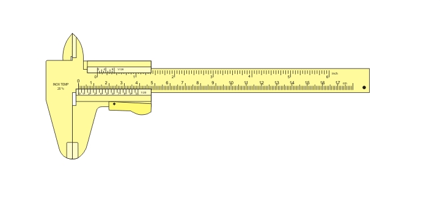

Posuvné meradlo (šuplera) — ako sa číta nameraná hodnota a interaktívne cvičenie na precvičenie.

Animácia
Krok za krokom, ako sa odčítava hlavná a nóniová stupnica.
Interaktívne cvičenie
Samostatná interaktívna stránka na tréning odčítavania hodnôt.
Spustiť cvičenie ↗